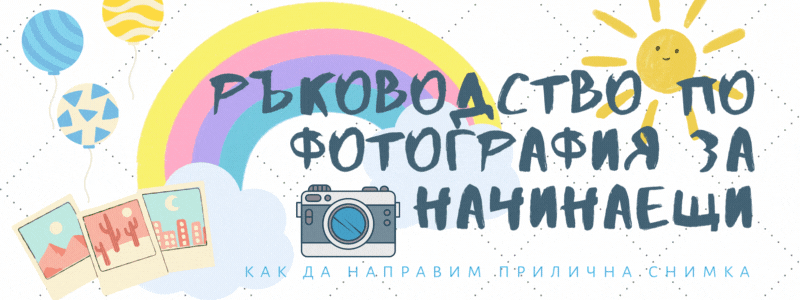

Как да направим прилична снимка (Ръководство по фотография за начинаещи)
За да привлечем внимание в днешно време все по- необходимо става да можем да създаваме визуално съдържание.
Композиция
Главната разлика между снимките на професионалните фотографи и аматьорите се състои в способността на човека с опитно око да привлече вниманието на зрителя точно към мястото, към което иска. Така успява да ракаже история и да създаде настроение, като например да внуши спокойствието на лежерна неделя или да покаже нечии отрудени черти и ръце. Сцената, която е пред вас може и да е приятна и красива сама по- себе си, но добрият фотогаф не се задоволява само с това. Те обмислят внимателно какво ще влезе в рамката, защото дори разкошни елементи може да разсейват от посланието. Затова трябва да се избере кое е най- важното, да не се разсейват и безмилостно да изключат останалото от кадъра. Не е лесно, но резултатът е видим. Освен преценка на сюжета, за да подобрим снимките си, важно е да съобразим колко близо да сме: ако става дума за отделно човешко същество си струва да се приближим, но ако искаме да предадем примерно духа на фиеса, може и да се отдалечим. Други аспекти, които трябва да се решават, а не да се оставят на случайността, са позицията (къде се държи камерата спрямо земята: високо, на нивото на очите или ниско) и под какъв ъгъл ще снимаме (какъв в наклонът). Колкото по- висока е позицията, толкова повече може да хванем в кадър, а ако сложим фотоапарата на земята се създава по- особен ефект, за разлика от нормалната позицията, с която сме свикнали. А ниските ъгли правят обекта да изглежда по- внишителен и силен, но може да изкриви неприятно пропорциите, докато високият внушава невинност, което пък може да не е каквото търсим. Във всеки случай, най- важното е да подчертаем присъствието на избрания обект, което става обиковено с цвят, разположение или водещи линии. Например момиче с червено палто естествено ще привлече погледа ни. Същото важи за така нареченото правилото на трите: ако поставим важното там, където се пресичат лините, които разделят изображението на три, по- лесно се вижда. Същото важи, ако към обекта ни водят линии: не е нужно да са истински, стига да създават това впечатление: например път, виещ се към планински връх, парапет, в чийто край е застанала фигура или друго подобно.
Светлина
В крайна сметка, запечатаното на лентата (вече дигитална) се състои от светлина, затова познаването на особеностите й ще окаже най- драматичен ефект върху снимките ви. Може да си мислите, че най- добри снимки се получават, когато слънцето грее с пълна сила, но това не е така. От прекаленото светлина се губи контраста и всичко изглежда измито. Всъщност най- подходящото време да уловите перфектния кадър е на зазоряване или точно преди слънцето да залезе- когато в съвсем светло, но не виждате диска на слънцето, така наречният “магически час”. Тогава светлината се разсейва, а не попада пряко в обектива. Също важно е да сте застанали между слънцето и обекта, който ще снимате. Или поне фотоапарта да е, ако си правите селфи. Най- добре се получава ако застанете до прозореца. Ако пък сте навън, където светлината е предостатъчно, намерете сянка. Ако не го направите снимката ви най- вероятно ще е недоекспорана (underexposed): вместо контраст по ръбовете ще се вижда бяло. Ако пък е прекалено тъмно, снимката ще стане преекспонирана (overexposed): все едно се вижда през черен воал. За да сме сигурни, че всичко е наред, може да консултираме хистограмата, която представлява визуализация на спектъра от тъмни до светли тонове. Ако снимате предмети пък, пробвайте да сложите бял лист или чаршаф от страната срещу прозореца- така светлината ще се отрази и сенките няма да са толкова дълбоки. И ако нещо ви се струва размазано, не забравяйте да изчистите лещата. Понякога разликата между обикновената и превъзходната снимка са няколко прашинки.Фокус
За жалост понякога е трудно да постигнете желания ефект на автоматичен апарат. Но поне за близки предмети, може да ползвате бутончето с цветенцето, на някои модели с храна. За снимки от малко разстояние, след като изберете този режим, цъкнете върху екрана, за да фокусира апарата върху обекта, който е грабнал вниманието ви. Освен фокуса, и ние трябва да държим стабилно. Най- лесно е да ползваме статив или трипод- днес има много различни форми и повечето са на поносима цена. Ако за момента нямате, за да стабилизирате кадъра, дръжте ръцете плътно до тялото си. Ако пък имате възможност да се подготвите, може да натрупате купчина книги и да поставите апарата върху тях. Ако правите снимки на далечен обект, за да не загубите качество, избягвайте да използвате zoom, а по- скоро се приближете. Може да ползвате тази функция по- скоро когато си правите селфи, за да избегнете изкривяването на краищата на снимката: протегнете ръка и приближете с помощта на апарата.Аранжировка
Ако снимате модели примерно за да покажете дрехи, чанти или друг аксесоар, който сте създали, но най- общо при продуктовата фотография, за да привлечете вниманието на правилното място, трябва да се замислите как елементите от композицията са подредени. Ако сцената е претрупана- отстранете нещо, ако е обратното- намерете и добавете интересен акцент, примерно, съставките на ястие, което сте приготвили, или нещо шарено, живо като шишарки, цветя или домашен любимец, аксесоари (часовник, очила, ключове, слушалки) и така нататък. Изборът тук зависи от темата на фотосесията. Важното е да подчертаете обекта на интерес. За да изпъкне например може за ограждащи предмети да изберете меки, пастелни цветове, ако това, което снимате е шарено или ярко, или пък да го заобиколите с неутрални като черно, бяло, сиво или кафяво. Друго решение е да добавите други текстури: твърда дървена дъска отдолу, мек плат, грапава кора от портокал. Защото примерно само гладки и лъскави предмети може да създадат студено и неестествено впечатление. Най- драматичен ефект ще има когато добавите повече пласта. Например ако снимате храна, под чинията сложете дъска или салфетка (по възможност в друг цвят), отдолу да речем клонче с листа, а под него кърпа с интересен десен. Ако снимате сапуни да речем, подпрете ги върху плода, чийто аромат имат- добавете цял плод, парченца и даже изстискан или отхапан, отдолу сложете и подправки- захар, канелени пръчици или връзка изсушена мента. Колкото повече, толкова по- добре! Ако ви се струва, че е прекалено, сменете цвета на някой от пластовете с някой по- неутрален. Експериментирайте- добавете, премахнете или заменете някой от предметите и за нула време ще имате приятен flat lay, достоен за дигиталния ви магазин или Instagram. https://www.vofisa.com/obuchenia/napravi-grafiki08.htmlПози
Да започнем с най- честия съвет: изправете се. Но не се изпъвайте като бастун, а си представете, че ви поникват криле, които ви теглят леко нагоре. Всичко, което е по- близо до лещата, изглежда по- голямо, затова, дами, изтеглете талията и задната част назад. За да създадем поза, която да не е безинтересна, може да си служим с точките на тялото, които може да местим като колена, рамена, врат и т.н. Лесен трик е да пробвате да създадете тригълници. Пробвайте също интересни ъгли, като например се обърнете на 3/4. Но не усуквайте прекалено тялото си, защото може да се получат странни комбинации. Преместете най- много две или три от ставите си. Ръцете си оставете леко докосващи тялото ви- без юмруци или разперени във ветрило. Ако пак не знаете какво да ги правите, не стойте като статуя, а действайте: присегнете се, прокарайте пръсти през косата си, завържете си обувките; или пък използвайте реквизит: цветя, чадър и каквото ви хрумне. Сладки кутрета също помагат. Що се отнася до лицето, обърнете себе си или модела си към светлината, за да нямате страховити сенки. Също намерете ъгъла на лицето, който ви харесва. Ако не става въпрос за арт проект, очите да са на нивото на вашите, за деца и животинки- коленичете на тяхното ниво. При снимането на хора, едно от най- грабващите страни е изражението. Обърнете внимание особено на веждите, защото те изразяват най- ясно емоциите. Пробвайте да присвиете очите си, защото изглежда по- естествено. Не се усмихвайте прекалено широко, а ако трябва да сте сериозни разтворете леко устата си. За да избегнете двойната брадичка, натиснете задната част на езика си към небцето. Както споменах по- горе, ако си правите селфи отдалечете апарата и зумнете, защото иначе може да е изкривено по краищата.Шум, отвор и скорост на затвора
Днешните фотоапарати са доста способни да направят прилична снимка с автоматичните настойки. Ако все пак искате да повишите нивото си, може да започнете от триъгълника на експонирането. Той се състои от трите параметъра, които може да ни дадат по- добра снимка: отвора на блендата, скоростта на затварянето й и ISO шум. Отвор на блендата (aperture, още наричана апертура или диафрагма) е основният механизъм, който контролира колко светлина ще достигне до сензора (преди филмовата лента). Измерва се с f-числото: колкото по- малко е толкова повече светлина се пропуска и има по- малка дълбочина на рязкост (depth of field), тоест само най- важният обект е във фокус, докато при по- големи числа предимството е, че фонът не е размазан.
Скорост на затвора (shutter speed) измерва за колко време през обектива се пропуска светлина. Особено важно е ако снимате бързо движещи се обекти като домашни любимци или обратно. За да може Шаро да не излезе размазан, трябва затвора да се спусне бързо, докато не е тръгнал песът да гони пак топката. Обикновено за да се компенсира малкото време на заснемата в комбинация трябва да се избере по- малко f-число (повече светлина). Ако обаче примерно се опитваме да заснемем нощното небе, скоростта трябва да е по- малка.
Чувствителност или шум (ISO) е копчето, с което се регулира колко чувствителен е сензорът към светлина. Виждали сте по филмите как за заснемането преди век, хората е трябвало да стоят неподвижно няколко минути. Днешните светлочувствителни матрици не са толкова бавни, но все пак ISO-то има значение. Ниското ISO води до по-тъмна снимка, която обаче няма да изглежда толкова „зърниста“. По-високото ISO означава, че повече площ от сензора приема все едно еднаква информация. Ползва се най- вече за вечерни снимки.
При тези условия може да се изкушите да ползвате светкавица, но бих ви препоръчала да я изключите.
Отвор на блендата (aperture, още наричана апертура или диафрагма) е основният механизъм, който контролира колко светлина ще достигне до сензора (преди филмовата лента). Измерва се с f-числото: колкото по- малко е толкова повече светлина се пропуска и има по- малка дълбочина на рязкост (depth of field), тоест само най- важният обект е във фокус, докато при по- големи числа предимството е, че фонът не е размазан.
Скорост на затвора (shutter speed) измерва за колко време през обектива се пропуска светлина. Особено важно е ако снимате бързо движещи се обекти като домашни любимци или обратно. За да може Шаро да не излезе размазан, трябва затвора да се спусне бързо, докато не е тръгнал песът да гони пак топката. Обикновено за да се компенсира малкото време на заснемата в комбинация трябва да се избере по- малко f-число (повече светлина). Ако обаче примерно се опитваме да заснемем нощното небе, скоростта трябва да е по- малка.
Чувствителност или шум (ISO) е копчето, с което се регулира колко чувствителен е сензорът към светлина. Виждали сте по филмите как за заснемането преди век, хората е трябвало да стоят неподвижно няколко минути. Днешните светлочувствителни матрици не са толкова бавни, но все пак ISO-то има значение. Ниското ISO води до по-тъмна снимка, която обаче няма да изглежда толкова „зърниста“. По-високото ISO означава, че повече площ от сензора приема все едно еднаква информация. Ползва се най- вече за вечерни снимки.
При тези условия може да се изкушите да ползвате светкавица, но бих ви препоръчала да я изключите.
Отново
Колкото и усилия и настройки да пробвате, понякога изображението не излиза както си го представяте. Затова е препоръчано да направете няколко щрака, за да имате избор. Ако си представяте, че дори професионалните фотографи имат перфектния кадър от първия път се лъжете. Приближете се, отдалечете се. Клекнете или се вдигнете на пръсти. Добавате или махнете нещо. Пробвайте друга поза. Променете настроението. Направете 10 пъти повече снимки, отколко ви трябват. Също дадена снимка може да е хубава, но да не е подходяща. Например при профилна снимка, където е важно да изглеждате надежден, може забавната снимка да ви саботира. Различните снимки имат различни предназначения. Но за разлика от преди век, днес имаме възможност да правим по 100 снимки на ден да се тренираме ако ни се прииска. Визуалната ни грамотност също е значително по- добра: всеки ден сме изложени на хиляди изображения, немалка част от които са направени от професионалисти. Наистина има много аспекти, настройки и неща, за които да се замислите, но ще се справите. Ако продуктовата фотография ви е интересна, вижте и мини урока за подреждане на равна повърхност (flat lays) от обучението за направа на графики.За да направите околния си свят малко по- елегантен, вижте безплатното обучение по Създаване на графики.